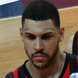

“The thing about Jason that kept me to have an open mind immediately is that the lead assistant role on my staff, I’ve always tried to fill with a former player, a former respected player that has coaching experiencedating back to Brian Shaw first, initially, and then onto Nate McMillan, and then Corliss Williamson on my coaching staff in Orlando,”
What NBA players and coaches have said about Brian Shaw
11 quotes about Brian Shaw from 8 players, coaches and executives, newest first. Each one links to its original source.
Best quotes
Payton shared with Poole and Johnson.
“We used to go fishing when my mom was pregnant with my brother. Detlef [Schrempf], Hersey [Hawkins]. Those were all of [Gary Sr.’s] teammates. Nate McMillan, Damon Stoudamire– [Jason] Kidd is like family, too. [Brian] Shaw is family. Big [Shaquille O'Neal]. Rest in peace Kobe [Bryant]. Kobe was around back then. I can literally go on. Bonzie Wells.”
Frank Vogel on report from Brian Shaw:
“They had problems in Denver, that’s well documented but every situation is different. I truly feel that. I feel like this is a clean slate for him coming in here and has a chance to play and play well for us.”
What Brian Shaw has said about other players and coaches →
Quotes per season
Who talks about Brian Shaw most
 Frank Vogel on Brian Shaw4 quotes
Frank Vogel on Brian Shaw4 quotes- Bill Bayno1 quote
 Gary Payton1 quote
Gary Payton1 quote
Jeff Pendergraph1 quote- John Salley1 quote
 Lance Stephenson1 quote
Lance Stephenson1 quote Luke Walton1 quote
Luke Walton1 quote Phil Jackson1 quote
Phil Jackson1 quote
Back and forth
- Brian Shaw and Phil Jackson4 quotes
2023-24
1 quotePayton shared with Poole and Johnson.
“We used to go fishing when my mom was pregnant with my brother. Detlef [Schrempf], Hersey [Hawkins]. Those were all of [Gary Sr.’s] teammates. Nate McMillan, Damon Stoudamire– [Jason] Kidd is like family, too. [Brian] Shaw is family. Big [Shaquille O'Neal]. Rest in peace Kobe [Bryant]. Kobe was around back then. I can literally go on. Bonzie Wells.”
2019-20
1 quote“The thing about Jason that kept me to have an open mind immediately is that the lead assistant role on my staff, I’ve always tried to fill with a former player, a former respected player that has coaching experiencedating back to Brian Shaw first, initially, and then onto Nate McMillan, and then Corliss Williamson on my coaching staff in Orlando,”
2015-16
2 quotesNate Taylor:Bill Bayno:
“They wanted Brian (Shaw) to come back, which I understood. Once Brian decided not to come, it was a done deal.”
Bill Bayno on Brian ShawTwitter @ByNateTaylor
Frank Vogel on report from Brian Shaw:
“They had problems in Denver, that’s well documented but every situation is different. I truly feel that. I feel like this is a clean slate for him coming in here and has a chance to play and play well for us.”
2013-14
1 quoteShaw landed his first head coaching gig this season with the Denver Nuggets.
“They should have given him [Brian Shaw] the opportunity to have that job, but that’s not my decision,”
2012-13
5 quotesMike Wells:More Vogel on Shaw:
“Denver just got one of the best head coaches this league will see for years to come.”
Mike Wells:Vogel on Shaw:
“So great to see Brian Shaw rewarded with this long overdue opportunity.”
Scott Agness:Jeff Pendergraph on Shaw:
“That's awesome news. Sad to see him go, love him on our team but man he deserves to be a head coach”
Jeff Pendergraph on Brian ShawTwitter @ScottAgness
Scott Agness:Lance Stephenson:
“Brian Shaw played a major part of my success this season. He helped me throughout the whole year and challenged me.”
When Salley chimed in on who he thinks would be the perfect candidate to be the Pistons next coach he mentioned that Pistons owner Tom Gores and team president and general manager Joe Dumars would get a guy who could make the team playoff-bound right away.
“I’m going to say one thing: Brian Shaw should be the next coach of the Detroit Pistons; Brian Shaw should be the next coach of the Detroit Pistons; Brian Shaw should be the next coach of the Detroit Pistons,”
2010-11
1 quoteWalton joined co-captains Bryant and Derek Fisher as the third Lakers player in the past two months to go on record endorsing Brian Shaw to be promoted from assistant coach to Jackson's successor.
“If we keep the triangle, I don't see where you go from anywhere but Coach Shaw,”